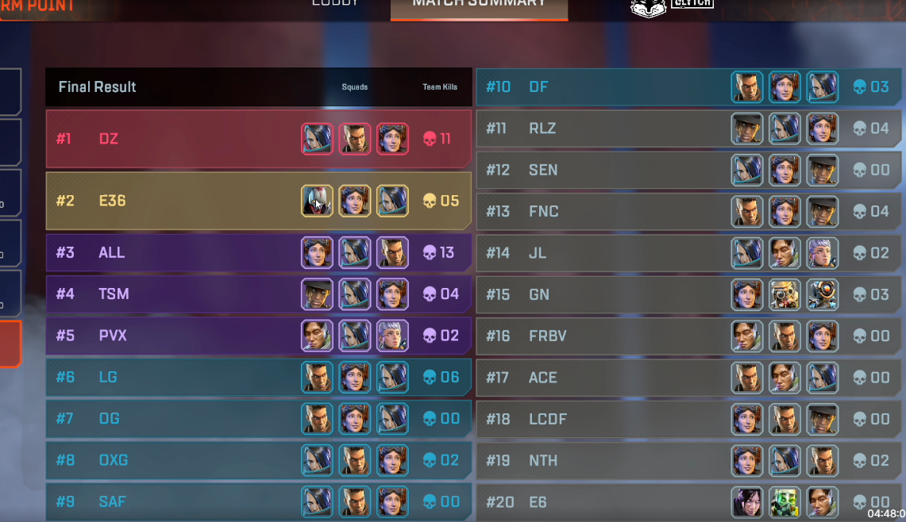
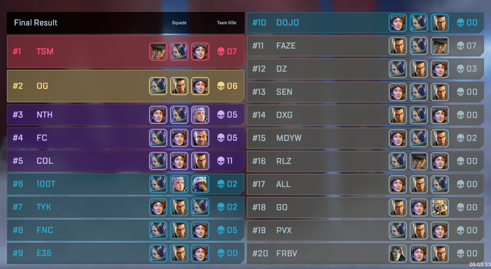

This section will include potential legend composition, playstyle, con strats for different POI's, and rotational strats.
•With the class update in Season 17, a general rule is that every team needs a Beacon scan (either Ring Console or Map Room Scan) character, a vertical movement character such as Horizon, and a defensive character such as Catalyst.
•If running a comp with a character with a large hitbox such as Caustic or Gibby, a character that can move them around, such as Wraith, Valk, or Pathfinder, is needed.
•Zone teams favor characters that provide team support to the entire team such as Loba (ammo and loot), Wattson (Shields), Lifeline (Armor and attachments).
•Majority Edge/Hybrid teams favor characters that provide fighting abilities such as Bangalore (rotational smokes/rolling thunder), Gibby (Bubble/Defensive Bombardment), Maggie (Riot Drill/Wrecking Ball).
•Characters who do not provide a team fighting ability, team support ability, or team movement ability such as Mirage, Revenant, Octane are no advised to be played.
•Niche characters are those who provide both team and fighting abilities or provide a very different set of abilities such as Fuse, Wraith, and Newcastle. Not bad picks, but hard to work around and better options exist.
•Characters like Vantage, Ash, Ballistic are all "Niche" characters, but vastly outmatched by their counter-parts like Seer, Wraith, Maggie.
Season 18 is currently the least diverse season we will have.
International LAN scrims from 08/09/2023
International LAN scrims from 08/10/2023
